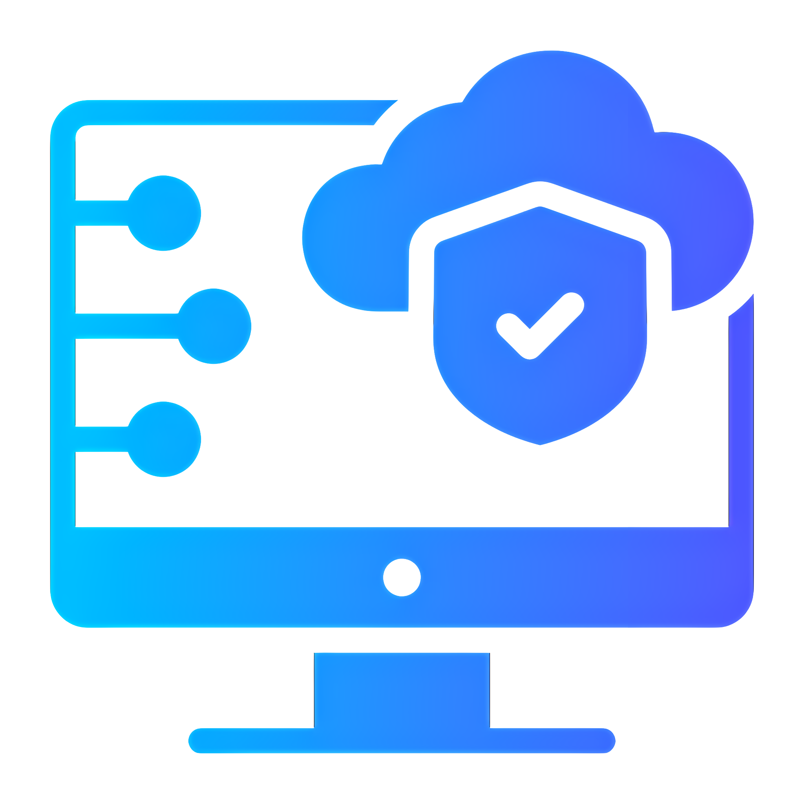

Is Technology Letting You Down?
IT support for your home and business.
What we do.
Professional Business Email Solutions:
Make your business stand out with your own domain name and managed email service
Cyber Security:
We only implement industry standard security practices
Troubleshooting and Diagnostics:
We can troubleshoot a wide range of IT and networking technologies
Data Solutions:
Data storage solutions and migrations to ensure your data is where it needs to be at all times
Home or Business Device Setup:
Desktop PC's, Laptops, Printers, Ring, Alexa and many more smart device's
IT Consulting:
Understandable and practical consultancy services to keep your IT infrastructure up to date and secure
Why choose us?
No Commitment:
Get support when you need it without the commitment of monthly contracts
Remote or Onsite Support:
Support options that suit your needs
Clear Rates:
No hidden costs, small business and home users in mind
No Jargon:
Easy to understand, no over complicated tech talk
Experienced IT Professionals:
We are experienced in business and personal computing
Proudly Local:
Based in West Lothian
Chat to us today
Click Here
